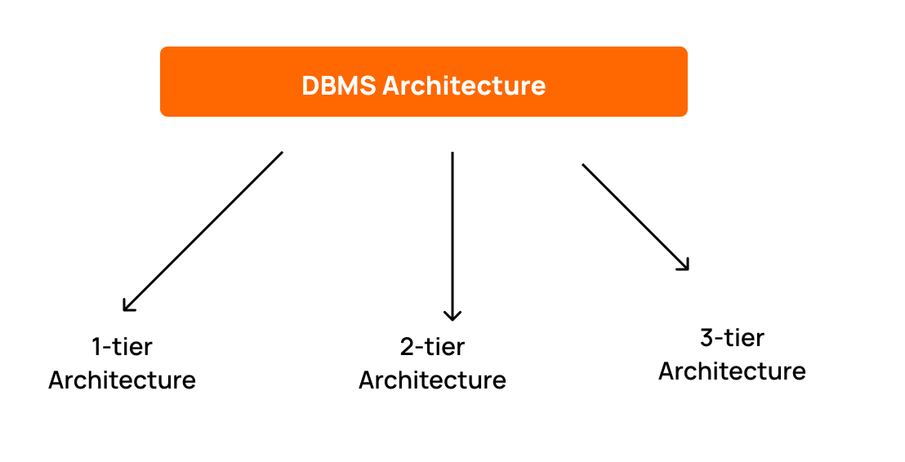

DBMS Architecture
- The data which is stored in the database at a particular moment of time is called an instance of the database.
- The overall design of a database is called schema.
- A database schema is the skeleton structure of the database. It represents the logical view of the entire database.
- A schema contains schema objects like table, foreign key, primary key, views, columns, data types, stored procedure, etc.
- A database schema can be represented by using the visual diagram. That diagram shows the database objects and relationship with each other.
- A database schema is designed by the database designers to help programmers whose software will interact with the database. The process of database creation is called data modeling.

1-Tier Architecture
In this architecture, the database is directly available to the user. It means the user can directly sit on the DBMS and uses it.
Any changes done here will directly be done on the database itself. It doesn't provide a handy tool for end users.
The 1-Tier architecture is used for development of the local application, where programmers can directly communicate with the database for the quick response.
2-Tier Architecture
The 2-Tier architecture is same as basic client-server. In the two-tier architecture, applications on the client end can directly communicate with the database at the server side. For this interaction, API's like: ODBC, JDBC are used.
The user interfaces and application programs are run on the client-side.
The server side is responsible to provide the functionalities like: query processing and transaction management.
To communicate with the DBMS, client-side application establishes a connection with the server side.
3-Tier Architecture
The 3-Tier architecture contains another layer between the client and server. In this architecture, client can't directly communicate with the server.
The application on the client-end interacts with an application server which further communicates with the database system.
End user has no idea about the existence of the database beyond the application server. The database also has no idea about any other user beyond the application.
The 3-Tier architecture is used in case of large web application.